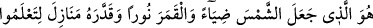
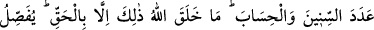
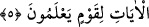

kimse, hatalarından ve kötülüklerinden tevbe eder ve îmân edip salih amel
işleyenlerden olur. Bir hadiste şöyle buyrulmuştur: “Kul kırk yaşına ulaşır da hala
hayrı şerrine gâlip gelmezse, şeytan onun iki gözünün arasından öper ve “Ebediyyen
iflâh olmayacak bir yüze kurban olayım!” der.”[21]
Eğer Allah ona ihsan eder de o tevbe eder ve onu cehalet sapıklıklarından çıkarıp
dalâlet tehlikelerinden kurtarırsa bu sefer de şeytan: “Vah, vah, ömrünü dalâlette
geçirdi, günahlarda gözüme girmişti de sonra Allah, onu tevbe ile günah karanlığından
tâat aydınlığına çıkardı.” der.
Mesnevî’de şöyle denilmiştir:
İnsan , önce uykuya muhtaçtır
Fakat nihayet meleklerden de üstün olur
Pamuk ve kükürdün himâyesinde
Şulesi ve nuru Sühâ yıldızına kadar çıkar
Yani kıvılcım, pamuk ve kibritin yardımıyla büyük bir ateş olur. Aynı şekilde insanın
ilk hali de kıvılcım gibidir. Bir mürebbî onun elinden tuttuğu yahut insanlardan hiçbir
kimsenin vasıtası olmaksızın Allah onu terbiye ettiği zaman Allah indinde değeri yüksek
bir makama yükselir. Akranı arasında kanlar arasındaki misk gibi olur. Allah’dan
yardım ve muvaffakıyet dileriz.
5. Güneş’i ışık, Ay’ı nûr yapan, yılların sayısını ve (vakitlerin) hesabı(nı) bilmeniz
için ona konaklar düzenleyen O’dur. Allah, bunları ancak hak ile (hikmetine göre)
yaratmıştır. (Allah) bilen bir kavim için âyetleri açıklar.
Kudretiyle “Güneş’i ışık,” yani gündüzleyin âlemler için ışıklı kılan demektir. Çünkü
mânâ, Güneş’in kendisine hamledilemez. Ya da Güneş’i ışıklı olduğu halde yarattı ve
var etti demektir.
“Şems (Güneş)” kelimesi, “Şemsetü’l-kılâde” tâbirinden alınmıştır. Kolyedeki
mücevherlerin en büyük ve en kıymetli olanına bu ad verilir. Güneşe “şems” adının
verilmesi de yıldızların ortasında bu şekilde yer almasındandır. Şerhu’t-Takvim’de
böyle geçmektedir.
“Ay’ı nur yapan” O’dur, Allah’tır. Ay’a, “kamer” denmesi renginin sarıya çalar beyaz
olmasındandır. Ayı nur yapmasından maksad geceyi nurlu kılmasıdır. Ziyâ (ışık) dilde,